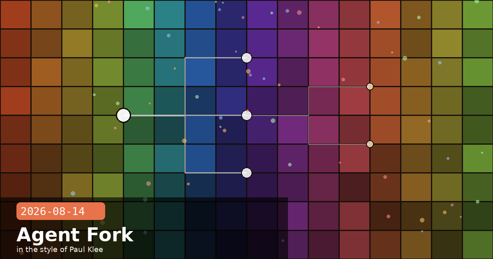

Auto Mode Live, Subagent Forking Default, and Output Watermarks

🧭 Claude Code v2.1.232: Subagent Forking On by Default and Cross-Session @-Mention
Claude Code v2.1.232 ships today with two features that substantially change how parallel and multi-session agentic work operates. Subagent forking is now on by default: forked subagents inherit the full conversation context and prompt cache from the parent, cutting repeat-token costs for parallel workloads without requiring any configuration change. Alongside this, cross-session @-mention routing lets you type @SessionName in any prompt to dispatch work directly to another live Claude session using SendMessage.
Subagent forking: what changes day-to-day
Before v2.1.232, spawning a subagent with subagent_type: "fork" was opt-in and required explicit configuration. From today, forking is the default behaviour for non-teammate agent spawns in interactive sessions, and those agents run in the background by default rather than blocking the parent turn. The practical upshot:
Prompt cache inheritance — the forked subagent starts with the parent's cache warmed, so it does not pay re-tokenisation costs for the conversation prefix on its first turn. For long agentic workflows where the parent has already built up a large context, this can meaningfully reduce per-subtask cost.
Background execution — the parent session continues accepting input while the subagent runs, rather than pausing until the fork returns. Long-running parallel tasks (linting a large codebase, running a test suite across multiple branches) no longer block the interactive session.
No configuration needed — existing subagent_type: "fork" calls are unaffected; new agent spawns automatically get fork semantics unless you override with subagent_type: "standard".
Cross-session @-mention routing
Typing @ in a Claude Code prompt now triggers a session-name picker. If the bare name you type matches exactly one live session, SendMessage fires without a confirmation step. This closes the loop for multi-session orchestration: a coordinating session can delegate to named specialist sessions (e.g. @frontend-agent, @db-agent) without requiring a separate tool invocation. The confirmation step remains for ambiguous names or when multiple sessions match.
Cost arithmetic for fork-by-default
Forking inherits prompt cache, but it also inherits the full context — including any large files, tool results, or conversation history the parent has accumulated. If your parent session has grown to 100K+ tokens, every forked subagent starts with that prefix in cache (effectively free on the first hit) but will still count it against your context window. For very large parent sessions, consider whether a fresh standard subagent with a targeted system prompt is cheaper overall than a fork with the full inherited context.
Claude Codev2.1.232subagentforkingmulti-sessionprompt cacheagentic
🧭 Anthropic Rolls Out Invisible Output Watermarks Globally
As of August 2, 2026 — in response to signing the EU AI Act Code of Practice — Anthropic began embedding invisible text watermarks in outputs from all new Claude models globally. The rollout covers Claude.ai, the API, Claude Code, Cowork, and Claude Tag. Supported file types (SVG, PNG, JPG) additionally receive signed C2PA provenance metadata. Watermarks are described as persisting through some editing but removable via format conversion or screenshots.
What this means for developers integrating Claude
EU AI Act Article 50 transparency requirements — if your downstream service is covered by Article 50 (AI-generated content disclosure rules), you may need to surface these watermarks or the C2PA metadata to end users. Anthropic's implementation satisfies the AI Act's technical requirement on Anthropic's side, but the disclosure obligation for your own service depends on how you use the output.
Cloud partner lag — AWS Bedrock, Google Cloud Vertex, and Azure AI Foundry deployments may not yet surface the file-metadata C2PA piece in their managed API responses. Check your cloud provider's release notes before relying on C2PA provenance for compliance.
Watermark stripping is possible — screenshots, copy-paste into plain text, and format conversion (e.g. PNG → JPEG re-encode) can remove the watermarks. Anthropic's implementation is a good-faith technical measure, not a cryptographic guarantee.
No opt-out for API callers — the watermarks are applied at the model layer and cannot be disabled via API parameters or headers.
Check your output pipelines before September
If you post-process Claude outputs (resizing images, converting file formats, re-encoding text through your own pipeline), verify that your steps do not inadvertently strip the C2PA provenance before delivery — doing so could create a gap between Anthropic's compliance posture and your own service's obligations under the EU AI Act.
🧭anthropic-workspace-id Header Now on Every API Response
As of August 11, every Claude API response includes a new anthropic-workspace-id response header carrying the wrkspc_-prefixed ID of the workspace the request's API key resolved to — including the Default Workspace. No opt-in, no beta flag; it appears on all responses immediately.
Why this matters for multi-workspace setups
Teams running multiple workspaces (e.g. separate environments for prod, staging, and dev, or separate business units on a shared Enterprise account) previously had to cross-reference the API key with the Console to confirm which workspace was being billed. With this header, you can:
Validate routing at runtime — assert in your integration tests that the correct workspace key is in use by checking the header on the first response, catching misconfigured environment variables before they result in charges to the wrong workspace.
Attribute costs per workspace in your own logging — extract anthropic-workspace-id in your HTTP middleware and tag it alongside anthropic-request-id and token-usage fields for per-workspace cost dashboards without a separate Console API call.
Audit trails — log the header value alongside request timestamps for any audit requirement that needs to map API activity to billing entities.
# Example: extracting the header with the Python SDK
import anthropic
client = anthropic.Anthropic()
response = client.messages.create(
model="claude-sonnet-4-6",
max_tokens=256,
messages=[{"role": "user", "content": "Hello"}],
)
# The raw HTTP response carries the header:
workspace_id = response._raw_response.headers.get("anthropic-workspace-id")
print(workspace_id) # e.g. "wrkspc_01ABC..."